|
Upon
setting out from Lindblum's Dragon's Gate, you can venture due east
over land to the Chocobo's Forest. This is where you get to meet
Mene and his pal Choco. They need your help in order to get to Chocobo
Paradise. This section covers how to get there...
| Many
of the side quests described in this section depend entirely
upon your progress in FFIX and in the Chocobo Hot and Cold game.
Your party will not be able to reach certain areas or find some
powerful items until you have commandeered certain vehicles
and Choco has acquired the necessary skills to swim, climb mountains,
or fly. |
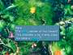 |
Each
time you pay Mene 60 Gil, you get 60 seconds to search the Chocobo
Forest for valuable items and Gil. To search, ride Choco around
the area and press the Square button to dig. Choco will let out
a "Kweh" sound each time you dig to indicate how close
or how far you are from a buried item. Choco makes a variety of
sounds, each with its own meaning. Here's what they mean:
 SPECIAL
ITEMS SPECIAL
ITEMS
KEYWORD: CHOC01 |
|
Noise
|
What
It Means
|
|
Kweh
|
No
treasure nearby
|
|
Kweh!?
|
You're
getting closer to the treasure
|
|
Kwehhh!?
|
You're
very close to the treasure
|
When
Choco screams "K-KWEHHH!!!" (all in caps), you have struck
the spot where an item is buried. Different items are buried at
different depths; obviously, the better items are deeper down and
take longer to dig out
For
each item or amount of Gil you find, you receive points. If you
find four items in one sixty-second game, Mene will add 10 seconds
to the clock and double your points for each item found thereafter.
If you dig up two items within five seconds of one another, you
receive additional bonus points.
| 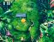 |
Choco's
beak level will increase occasionally, depending on the total
number of points you've earned. As Choco improves, finding items
and digging them up become much easier and faster. |
CHOCOGRAPHS
& ABILITIES
KEYWORD: CHOC2 |
Chocographs
| There
are certain items buried deep beneath the ground in the forest
called Chocographs. Chocographs are items that provide
clues to the whereabouts of buried treasure that Choco can dig
up on the World Map. During your first visit to the Chocobo
Forest, you may find the first Chocograph within 3 or 4 games.
The first Chocograph, labeled "Streamside," lets you
dig up a treasure chest buried on the beach near the river just
outside the Chocobo Forest. |
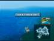 |
To use a Chocograph to find buried
treasure, leave the Chocobo Forest riding Choco. Press the Triangle
button to open the Chocograph menu, select the treasure you want
to search for, and exit the menu. Now toggle the Select button until
the mini-map appears in the lower right-hand corner of the screen.
The picture of the treasure's location should appear just above
the mini-map. Ride Choco to that location and begin searching for
the treasure by pressing the Square button. Choco will make similar
sounds as in the "Chocobo Hot and Cold Game" to indicate
the proximity of the treasure.
| 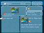 |
A
Chocograph also lists the skills your Chocobo must possess in
order to find that treasure. The Chocograph will appear grayed
out on the menu until Choco has the proper abilities to find
it. |
A complete
list of the Chocographs is further down, including the treasures
you can find and a reference map.
A few Chocographs provide hints about locations where Choco
can dig up a "Power Up." In this case, instead of finding
treasures, Choco will fall asleep and go to Chocobo's Dream World
for a moment.
Here,
Fat Chocobo (god of all Chocobos) bestows upon Choco a new ability,
which in turn changes Choco's color. Each color indicates that Choco
has attained a new ability. The abilities are cumulative, so Choco
will not lose a previously gained ability just because he has turned
a new color.
| When
Choco is light blue, he has the REEF ability and can search
the reefs (light-blue areas of the ocean) just offshore. A red-colored
Choco has the Mt. ability and can run across mountains and ridges,
which were previously impassable. This also enables Choco to
search the high ledges to the left and to the right in the Chocobo's
Forest area. However, you should only search up there when it
appears that there's nothing on the ground. A dark-blue-colored
Choco with the SEA ability can swim across any part of the ocean.
Finally, a gold-colored Choco with the SKY ability can lift
off from or land in any forest area; simply press the X button
to do so. This enables a gold Choco to reach islands and areas
that not even an airship can access |
|
|
Choco
must have the REEF ability to travel in the light blue colored
water areas to find Chocobo's Lagoon. Ride Choco north across
the reefs in this area, curving south until you reach an island
with a cave visible in the side, close to the reef. When you
see the "?" appear, ride in with Choco. This is Chocobo's
Lagoon!
|
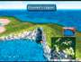
|
| Mene
appears and offers to let you search the area for 30 seconds
at 30 Gil a shot. With the REEF ability, the light blue colored
chocobo can only search the shallow portions of the area. Once
he earns the SEA ability, the dark blue chocobo can search the
entire area for 60 seconds at 60 Gil. Note that, you must have
a red chocobo before you can have the ocean chocobo. To acquire
the ocean chocobo, you must return to Chocobo Forest with the
red chocobo. |
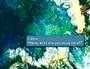 |
Chocobo's
Air Garden
After
finding all of the Chocographs in Chocobo's Lagoon, Mene indicates
that it's time to find Chocobo's Air Garden. The whereabouts of
this mysterious place is indicated by the clues inscribed on the
back of the six Chocograph Pieces. You must dig up all six of these
pieces in the "Chocobo Hot and Cold game." After finding
them all, the Chocograph that leads you to the gold-colored chocobo
SKY ability immediately becomes available.
| Most
of the Chocograph Pieces indicate a location on the World Map.
Fly to each location with the gold Choco and search for a small
black shadow on the ground. The five possible locations are
indicated on the following map. |
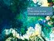 |

|
When
you find the shadow, hover Choco directly over it and then take
Choco up into the sky. Feed Choco a Dead Pepper, which temporarily
increases Choco's abilities, to find the Air Garden. After Mene
arrives, you can play the "Chocobo Hot and Cold Game"
here to find the remaining Chocographs. Search along the two
islands floating among the clouds, but don't hop to the other
one until you're sure there are no more treasures on the isle
you're currently on. |
| After
finding all of the Chocographs and digging up their corresponding
treasures, it's time to head to Chocobo's Paradise. You'll need
a Dead Pepper, an item you can find while playing "Chocobo
Hot and Cold." |
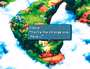 |
| Pilot
your gold chocobo to the most northwestern part of the World
Map, where you'll find a hidden island. There's a forest for
Choco to land in and a small mountain nearby. Look for a large
crack on the side of the mountain. Move Choco across the ground
to the crack, and then open the menu (press the Triangle button)
and use a Dead Pepper. Choco will dig open the entrance to Chocobo's
Paradise. |
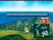 |
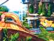

|
Now
ride Choco to the right, where he will use the fountain as a
springboard to leap up to the high platform. This is where Fat
Chocobo presides. At this stage, the Fat Chocobo will indicate
that there are still treasures to find on the World Map. Also,
you are now able to understand all of the chocobos when they
speak. The chocobo seated to the left of Fat Chocobo will give
you 99 Dead Peppers. All the rest of the chocobos, including
the two near the entrance, provide clues as to the whereabouts
of treasures hidden in the world that you can find by using
Dead Peppers. |
| If
you've found all of the treasures, Fat Chocobo dictates that
Choco must stay in Chocobo's Paradise. He gives you the ultra-rare
Fat Chocobo Card, as if it's any consolation. But don't worry,
Choco won't abandon his friends. When you move back to the entrance,
Choco rejoins you for more adventures! |
|
SIDE
QUESTS
(keyword: CHOCQU7) |
| Before
leaving, make sure you explore the area thoroughly. There's
a cool item you can pick up. |
Listed
in the following table are all of the Chocographs in the game in the
order they appear in the Chocograph menu. The numbers assigned to
them correspond to their placement on the accompanying map.
SPECIAL
ITEMS
KEYWORD: CHOC3 |
| Dead
Pepper Treasure Locations |
|
NO.
|
Name
|
Treasures
Found
|
|
1
|
Streamside
|
2 Elixir,
3 Hi-Potion, 4 Ethers, 2 Germinas Boots
|
|
2
|
Between
mountains
|
5 Potion,
5 Hi-Potion, 2 Tent, 2 Cotton Robe
|
|
3
|
Uncultivated
land
|
10 Antidote,
1 Jade Armlet, 3 Wing Edge, 1 Cargo Ship Card
|
|
4
|
Healing
shore
|
Chocobo
upgrade to light blue Choco
|
|
5
|
Abandoned
beach
|
9 Phoenix
Pinion, 5 Phoenix Down, 12 Peridot, 1 Diamond Gloves
|
|
6
|
Cold field
|
5 Echo
Screen, 7 Hi-Potion, 3 Tent, 1 Theater Ship Card
|
|
7
|
Forgotten
lagoon
|
8 Gysahl
Greens, 5 Ether, 7 Hi-Potion, 1 Dragon's Claws
|
|
8
|
Faraway
lagoon
|
37 Potion,
6 Magic Tag, 1 Shield Armor, 1 Gaia Gear
|
|
9
|
Abandoned
lagoon
|
6 Soft,
4 Ether, 1 Feather Boots, 1 N-Kai Armlet
|
|
10
|
Bird's-eye
lagoon
|
8 Potion,
4 Phoenix Down, 3 Ether, 1 Magician Robe
|
|
11
|
Small
beach
|
4 Remedy,
2 Elixir, 8 Rising Sun, 1 Oak Staff
|
|
12
|
Dawn lagoon
|
Chocobo
upgrade to red Choco
|
|
13
|
Forbidden
forest
|
7 Ether,
2 Elixir, 10 Wing Edge, 1 High Mage Staff
|
|
14
|
Green
plains
|
Chocobo
upgrade to dark blue Choco
|
|
15
|
Dusk Plains
|
12 Phoenix
Down, 14 Ore, 1 Kaiser Knuckles, 1 Iron Man Card
|
|
16
|
Forgotten
plains
|
17 Ore,
5 Ether, 14 Opal, 1 Demon's Mail,
|
|
17
|
Sea at
dusk
|
15 Phoenix
Pinion, 1 White Robe, 1 Diamond, 1 Masamune Card
|
|
18
|
Ocean
|
27 Ore,
1 Light Robe, 1 Whale Whisker, 1 Alexander Card
|
|
19
|
Cold lagoon
|
11 Peridot,
9 Opal, 15 Sapphire, 19 Topaz
|
|
20
|
Mist ocean
|
Chocobo
upgrade to gold Choco
|
|
21
|
Outer
island
|
21 Amethyst,
16 Garnet, 1 Genji Armor, 1 Ragnarok
|
|
22
|
Outer
island 2
|
11 Sapphire,
1 Circlet, 1 Pumice Piece, 1 Hilda Garde 3 Card
|
|
23
|
Fairy
island
|
33 Potion,
15 Annoyntment, 1 Holy Miter, 1 Dark Matter Card
|
|
24
|
Forgotten
island
|
1 Ribbon,
1 Rebirth Ring, 13 Amethyst, 1 Ark Card
|
Indicated
on the Chocograph Map (see previous map) are locations where you can
use Dead Peppers to search for additional treasures. The exact locations
are indicated by either cracks in the sides of mountains or by bubbling
water.
| To
get the ball rolling, return to Quan's Dwelling on the Mist
Continent. Search the edge of the patio overlooking the ocean,
where you can see the foaming water below. Decide to try a Dead
Pepper, and Zidane reappears on the World Map riding Choco on
the patio. Using the Dead Pepper causes Choco to swan-dive into
the bubbling waters, retrieving the treasure. |
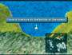
|
| During
Disc 4, move Choco across the waters using the SEA ability and
head for where the Shimmering Island once stood. Keep moving
until Choco is positioned exactly on the dot where "Shimmering
Island" is still indicated on the World Map (when you press
the SELECT button). When you use a Dead Pepper, Choco uncovers
the greatest treasure cache of them all! This stash includes
Zidane's Ultima Weapon, the strong Maximillian armor, and the
ultra-rare Invincible Card!
|
Foaming
Water Beneath Quan's Dwelling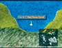
9 Ore
15 Topaz
1 Tiger Racket
1 Red Rose Card
Foaming
Water Directly North of Iifa Tree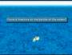
50 Potion
25 Hi-Potion
9 Ether
7 Elixir
Foaming
Water Directly Between Mist Continent and Outer Continent
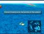8
Straw Hat
8 Pearl Armlet
7 Aloha T-shirt
8 Sandals
Foaming
Water at South Tip of Forgotten Continent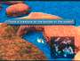
10 Remedy
1 Black Robe
1 Genji Gloves
1 Blue Narciss Card
Mountain
Crack on Eastern Part of Lost Continent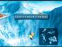
41 Lapis Lazuli
1 Rosetta Ring
1 Protect Ring
1 Airship Card
Mountain
Crack on Northeastern Part of Forgotten Continent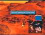
19 Eye Drops
1 Madain's Ring
1 Genji Helmet
1 Hilda Garde 1 Card
Mountain
Crack Near Oeilvert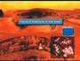
1 Maiden Prayer
1 Dragon's Hair
1 Gauntlets
1 Odin Card
Exact
Former Location of Shimmering Island
10 Aquamarine
1 Ultima Weapon
1 Maximillian
1 Invincible Card
As an added bonus for completing
the "Chocobo Hot and Cold" game, Choco can learn to completely
restore your party's HP and MP, as well as remove any status abnormalities.
All you need to do is visit a beach.
First,
find every treasure on the World Map and all of the Chocographs.
Then visit Chocobo's Paradise and challenge Fat Chocobo to a card
game. When you challenge Fat Chocobo to a card game, he will give
you clues to the beaches. It isn't necessary to even play against
him, as long as you challenge him.
| Ride
Choco to a beach and dismount. Then press the Circle button
and you will hear a chime. After you repeat this process on
every single beach, you will heal your entire party. You can
now heal your party completely just by visiting any beach and
pressing the Circle button! |
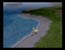 |
|
)
)
)
){kind=link}
){kind=link}
){kind=link}
){kind=link}
){kind=link}
){kind=link}
){kind=link}
){kind=link}
){kind=link}
){kind=link}
){kind=link}
){kind=link}
){kind=link}
){kind=link}
){kind=link}
){kind=link}
){kind=link}
){kind=link}
){kind=link}
){kind=link}
){kind=link}
){kind=link}
){kind=link}
){kind=link}